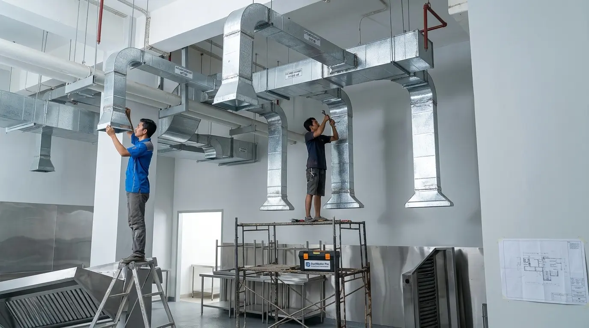
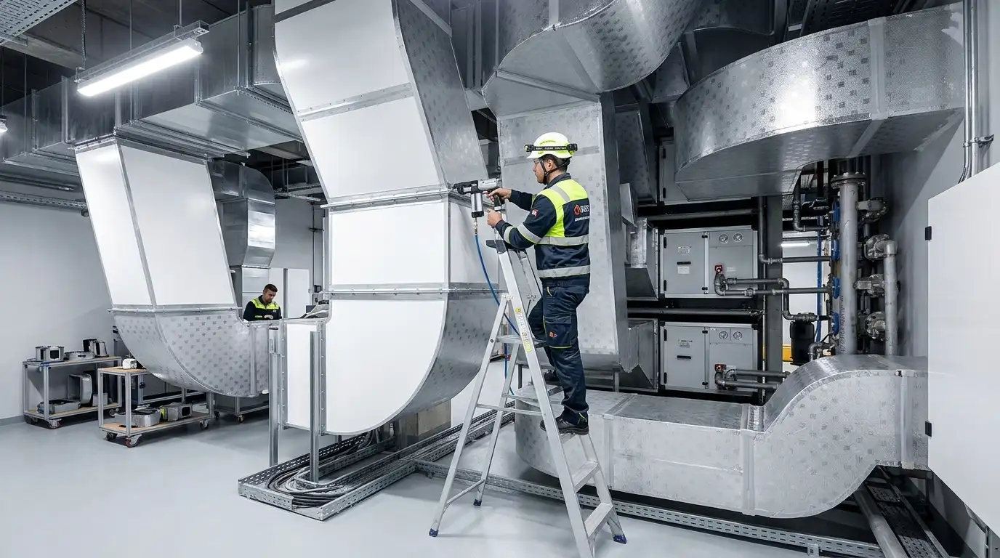
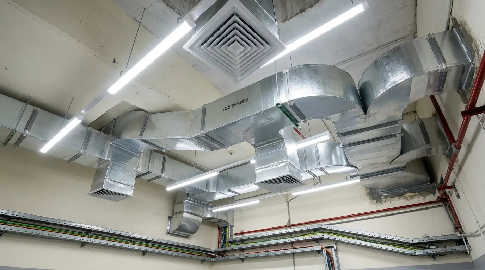
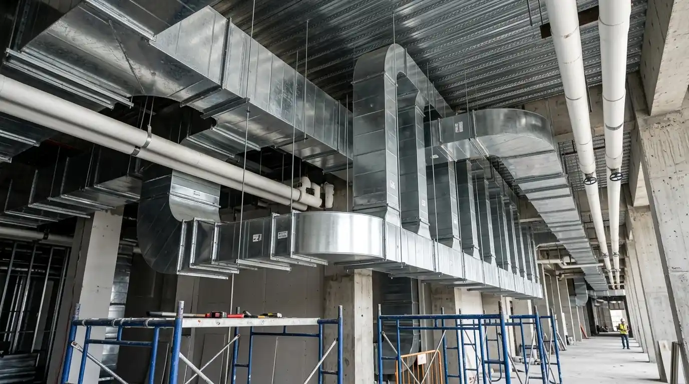
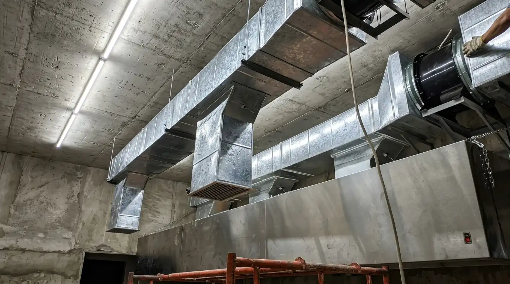
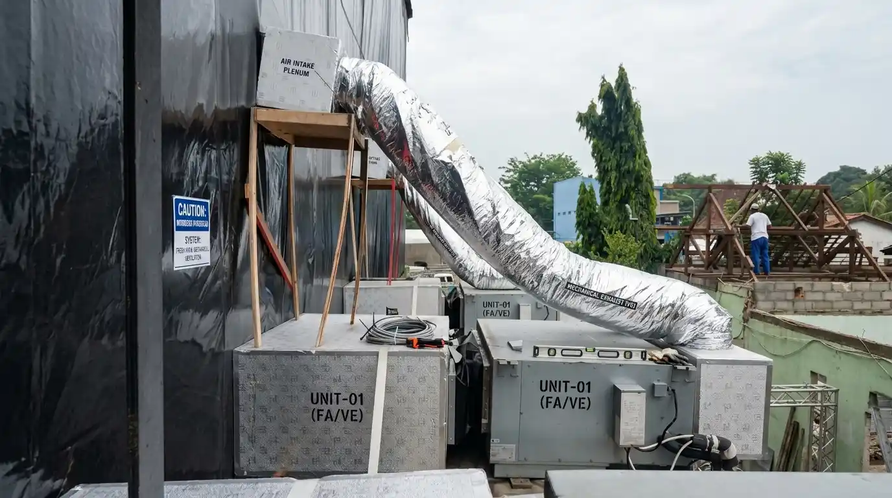
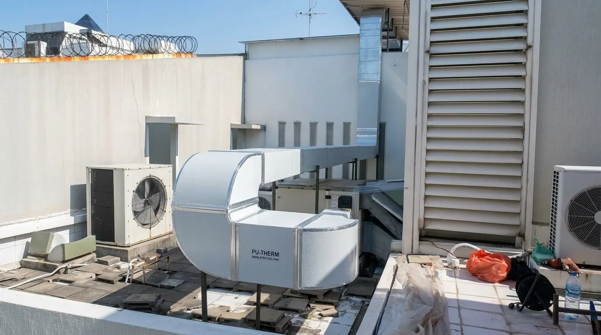
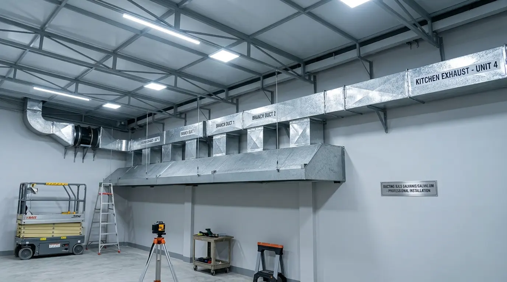
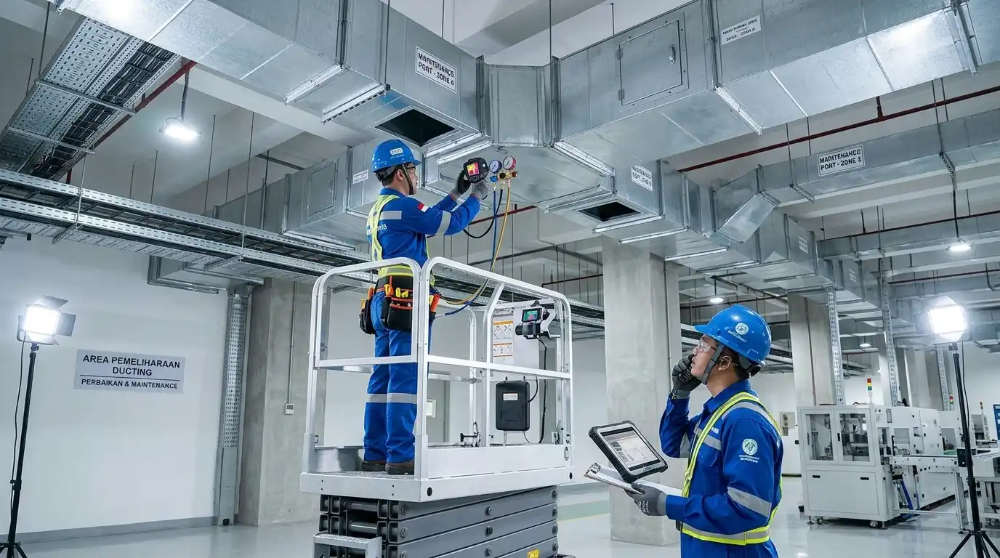

Jasa Instalasi Ducting Kitchen, Exhaust & HVAC untuk Bisnis Anda
Ducting Kitchen Indonesia melayani instalasi, perbaikan, dan perawatan sistem ducting exhaust, fresh air, serta HVAC untuk restoran, hotel, pabrik, gedung komersial, dan rumah sakit di Jakarta, Bekasi, Karawang, dan seluruh wilayah Jabodetabek.

Kontraktor Ducting Kitchen & HVAC Profesional
Ducting Kitchen Indonesia adalah kontraktor spesialis sistem ventilasi mekanis yang telah menangani lebih dari 300 proyek B2B di kawasan Jakarta, Bekasi, Karawang, hingga Purwakarta.
Kami mengerjakan proyek dari skala dapur restoran tunggal hingga sistem ducting HVAC terpusat untuk gedung industri dan fasilitas kesehatan. Setiap instalasi dirancang berdasarkan kalkulasi CFM aktual—bukan estimasi—dengan material standar SNI dan dikerjakan oleh teknisi bersertifikat K3.
10+
Tahun Pengalaman
300+
Proyek Selesai
6
Kota Layanan
100%
Bergaransi


Apa yang Anda Dapatkan dari Ducting Kitchen?
Setiap proyek dikerjakan dengan standar teknis tinggi, legalitas terjamin, dan rekam jejak proyek yang dapat diverifikasi dari awal hingga akhir.
Teknisi Bersertifikat K3
Seluruh teknisi kami bersertifikasi K3 Ketenagakerjaan dan kompetensi HVAC/MEP, mengikuti standar SNI dan ASHRAE.
Legalitas & Transparansi Penuh
Badan usaha resmi. Setiap proyek dilengkapi SPK, RAB terperinci, laporan teknis, dan as-built drawing.
Kalkulasi CFM Akurat
Tim kami menghitung kebutuhan CFM dan tekanan statis berdasarkan dimensi dan fungsi ruangan aktual Anda.
Jangkauan Layanan Luas + Survei Gratis
Melayani seluruh Jabodetabek, Karawang, dan Purwakarta. Survei lokasi gratis tanpa syarat.
Produk Utama Ducting & HVAC
Solusi lengkap sistem ventilasi dan HVAC dari perencanaan hingga perawatan berkala dengan material standar SNI.

Exhaust System Paling LarisInstalasi Ducting Exhaust Kitchen
Sistem exhaust dapur restoran, hotel, dan katering. Mengeliminasi asap, bau, dan uap panas dengan daya hisap CFM presisi.

HVAC System KomersialSistem HVAC & AC Ducting Sentral
Pemasangan ducting AC sentral untuk kantor, mall, rumah sakit, dan pabrik. Distribusi suhu dingin merata dan hemat energi.

Fresh Air Udara BersihDucting Fresh Air & Ventilasi Mekanis
Sistem suplai udara segar terfiltrasi untuk ruang rapat, cleanroom, dan area industri tertutup guna menjaga kualitas sirkulasi.

Material PU Anti KondensasiDucting Polyurethane (PU) Thermal
Ducting berisolasi bawaan berkualitas tinggi. Sangat cocok untuk AC gedung, ringan, tidak berembun, dan minim kebocoran suhu.

Material BJLS Standar SNIDucting BJLS Galvanis / Galvalum
Standar industri paling tangguh untuk sistem exhaust dan ducting berat. Tersedia ketebalan BJLS 0.5mm hingga 1.2mm presisi.

Layanan Servis Garansi ServisPerbaikan & Maintenance Ducting
Layanan perbaikan kebocoran ducting, pembersihan minyak/debu industri, penggantian fan motor, dan maintenance berkala.
Butuh Fabrikasi Ukuran & Spesifikasi Kustom?
Kami menerima pemesanan ducting BJLS & PU sesuai gambar teknis / CAD proyek Anda dengan harga pabrikasi langsung.
Kepercayaan Klien & Kemitraan Proyek
Pengalaman langsung dari para pengelola restoran, manajer industri, dan building manager yang telah mempercayakan sistem ducting & HVAC mereka kepada tim spesialis kami.
"Tim Ducting Kitchen sangat profesional. Instalasi ducting exhaust kitchen restoran kami selesai tepat waktu dan hasilnya sangat rapi. Dapur kami kini jauh lebih dingin dan bebas asap berlebih."

"Kami menggunakan jasa Ducting Kitchen untuk sistem ducting HVAC di fasilitas pabrik kami di Karawang. Teknisi mereka memahami regulasi teknis industri dengan sangat presisi. Dokumen uji CFM sangat lengkap."

"Pemasangan ducting AC Sentral untuk area tenant mall terlaksana dengan rapi tanpa mengganggu operasional gedung. Koordinasi K3 tim di lapangan sangat disiplin."

"Suhu dapur central kitchen kami kini jauh lebih sejuk dengan instalasi Ducting PU Polyurethane. Daya hisap hood sangat kuat dan tidak bising sama sekali!"

Solusi Lengkap Ducting & HVAC Profesional
Fabrikasi dan instalasi sistem ducting berstandar SNI, dikerjakan teknisi bersertifikat K3 untuk berbagai skala proyek industri, komersial, dan residensial.
Ducting Exhaust
Sistem pembuangan udara kotor, panas, dan asap dapur industri, restoran, serta area pabrik dengan kapasitas CFM optimal.
- Kapasitas CFM Tinggi
- Anti Grease & Fire Rated
Ducting Fresh Air
Suplai udara bersih dan segar dari luar ke dalam gedung, kantor, mall, dan ruang tertutup untuk kualitas udara optimal.
- Filtrasi Udara Bersih
- Sirkulasi Mekanis
Ducting AC Sentral
Distribusi hawa dingin merata ke seluruh ruangan untuk efisiensi suhu dan energi optimal pada gedung komersial dan industri.
- Desain Custom
- Efisiensi Energi Tinggi
Ducting PU
Saluran berinsulasi busa Polyurethane premium, anti bocor dingin, higienis, kedap suara, dan ringan untuk berbagai aplikasi.
- Insulasi Busa PU Premium
- Higienis & Kedap Suara
Ducting BJLS
Saluran plat baja lapis seng kokoh dan tahan panas, awet berumur panjang, dan ekonomis berstandar SNI untuk industri.
- Standar SNI Terjamin
- Tahan Panas & Korosi
Konsultasi & Survey Proyek
Diskusikan spesifikasi teknis, estimasi anggaran RAB, dan jadwal survey lokasi Anda bersama tim ahli kami tanpa biaya.
Pertanyaan Umum Seputar Proyek Ducting
Jawaban lengkap dan rinci seputar spesifikasi teknis, proses pengerjaan, estimasi biaya RAB, dan garansi resmi instalasi ducting.
Masih Memiliki Pertanyaan Teknis Lainnya?
Tim spesialis teknis kami siap memberikan konsultasi perhitungan CFM dan estimasi RAB gratis.